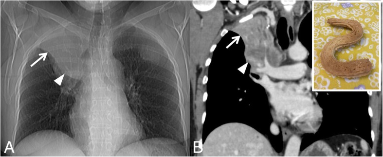
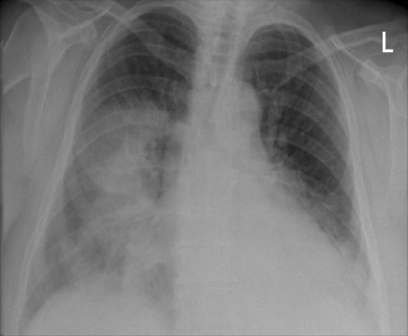
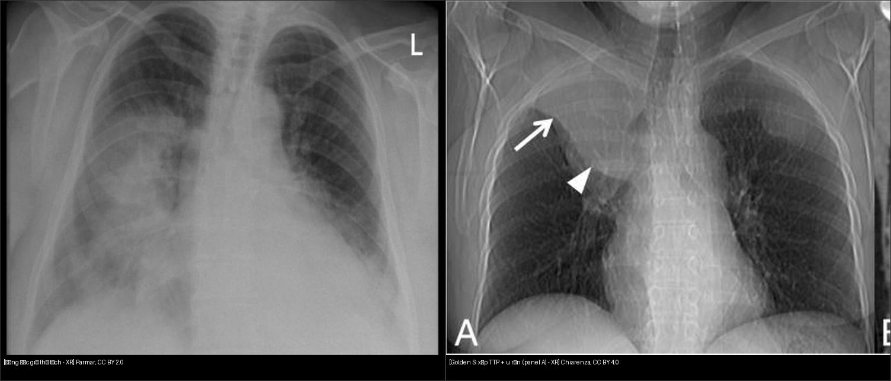
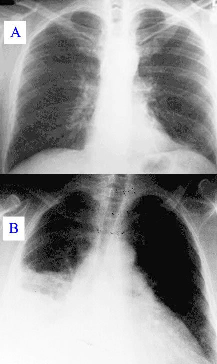
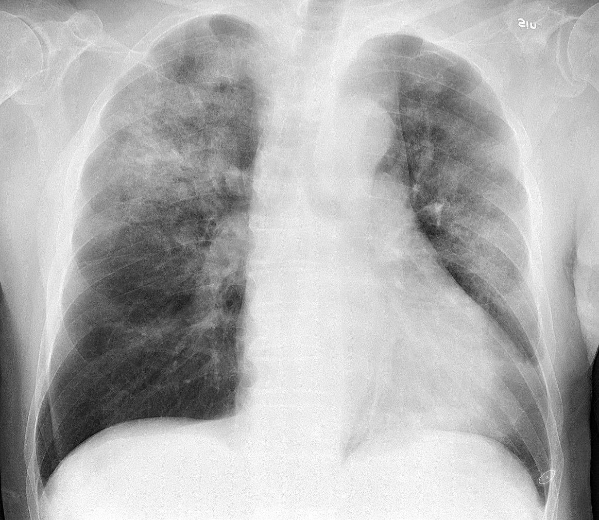
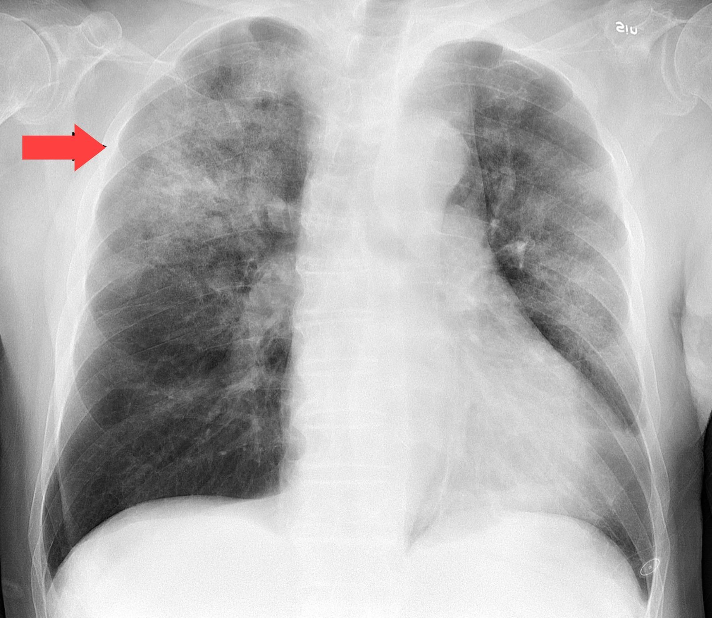
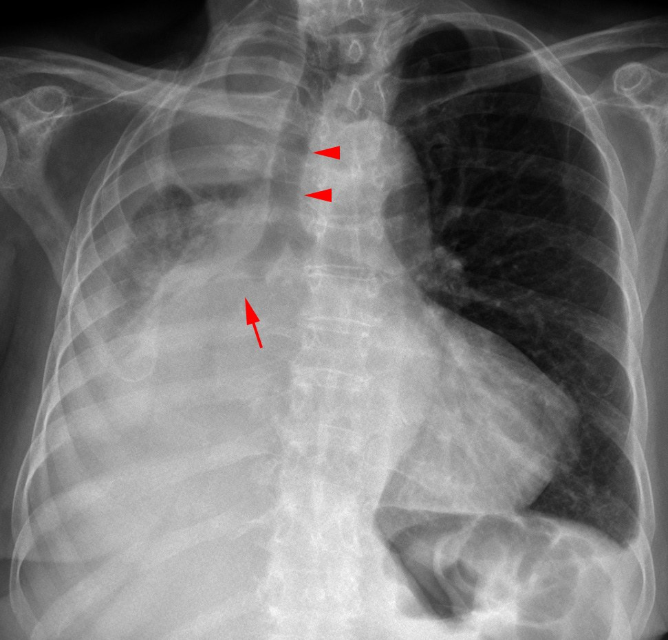

030 — Đông đặc – xẹp phổi / Consolidation – atelectasis
Tags: pattern:dong-dac vung:phoi
Mức chắc chắn (certainty): tổng hợp y văn (literature synthesis) — nội dung do nhóm tự biên từ y văn mở, chưa gắn ca nguyên văn đơn lẻ.
1. Tổng quan bệnh học – cơ chế hình ảnh
- Đông đặc (consolidation): phế nang (alveoli) chứa đầy dịch/mủ/máu/tế bào thay vì khí. Tia X bị suy giảm → mờ đều (opacity), nhưng phế quản vẫn còn khí → hiện hình nhánh đen trong vùng trắng: phế quản hơi (air bronchogram). Thể tích giữ nguyên.
- Xẹp phổi (atelectasis): phế nang mất thể tích (volume loss) — do tắc (obstruction, vd dị vật/u), chèn ép (compression, vd tràn dịch), co kéo (cicatricial) hoặc thiếu surfactant. Phim mất khí + kéo lệch cấu trúc lân cận: rãnh liên thùy (fissure) di lệch, trung thất (mediastinum) kéo về bên xẹp, cơ hoành (diaphragm) nâng cao, khoảng liên sườn (intercostal spaces) hẹp lại.
- ⚠️ CHỐT HỌC THUYẾT: mất thể tích là tiêu chuẩn duy nhất phân biệt xẹp vs đông đặc. Phế quản hơi KHÔNG loại trừ xẹp nói chung — xẹp thụ động (tràn dịch ép) và xẹp co kéo vẫn có phế quản hơi, thậm chí tụ lại (crowded); nó chỉ biến mất khi tắc nghẽn trung tâm hoàn toàn (khí không vào được).
- Golden S sign: xẹp thùy trên (upper lobe) phải + u trung tâm: bờ dưới lồi (khối u) + bờ trên lõm (rãnh bé kéo lên) ghép thành chữ S — thấy S là nghĩ ngay u gây xẹp, chỉ định soi phế quản. Mô tả gốc: Ross và Golden 1925, xẹp thùy trên phải do ung thư phế quản rốn phải (Chiarenza 2019, Fig. 17).

Panel A: X-quang — xẹp thùy trên phải (mũi tên) + u rốn phải (đầu mũi tên). Panel B: CT coronal cùng mặt cắt. Nguồn: Chiarenza et al., Insights into Imaging 2019 Fig. 17, CC BY 4.0 (giữ nguyên toàn figure).
X-quang ngực thẳng (PA): đông đặc thùy giữa (middle lobe) phải + đáy 2 bên. Nguồn: Parmar, CC BY 2.0 (xemimages/CREDITS.md).
2. Mẫu hình + chẩn đoán phân biệt theo vị trí (gamut)
- Đông đặc thùy (lobar): viêm phổi (pneumonia) điển hình, nhồi máu phổi (infarction), xuất huyết (hemorrhage), ung thư dạng viêm (adenocarcinoma thể lepidic).
- Đông đặc đa ổ/loang lổ (multifocal/patchy): viêm phổi hít (aspiration), viêm phổi virus, phù phổi (edema), xuất huyết lan tỏa (DAH).
- Xẹp thùy/đoạn: tắc trong lòng (u, dị vật, nút nhầy — mucus plug) vs chèn ép ngoài (tràn dịch màng phổi (pleural effusion), hạch (lymphadenopathy)).
- Xẹp dạng đĩa (plate/disc atelectasis): đáy phổi, sau mổ, dải mờ mỏng song song cơ hoành — lành tính, dễ nhầm sẹo (scar).
3. Bảng so sánh phân biệt (ma trận đối chiếu)
| Thực thể (entity) | Hình ảnh điển hình (X-quang/CT) | Chốt vào (rule-in) | Chốt loại (rule-out) | Gợi ý xác nhận |
|---|---|---|---|---|
| Đông đặc viêm phổi (pneumonia) | Mờ đều, giới hạn theo thùy/đoạn, phế quản hơi (+), thể tích giữ nguyên | Phế quản hơi + không mất thể tích | Có kéo lệch rãnh liên thùy/trung thất → xẹp kèm, không phải đông đặc thuần | Lâm sàng sốt + CRP, CT cửa sổ phổi (lung window) |
| Xẹp tắc (obstructive atelectasis) | Mờ đặc + mất thể tích (rãnh lệch, trung thất kéo sang) | Mất thể tích + tắc trung tâm → mất phế quản hơi; Golden S nếu thùy trên + u | Còn phế quản hơi lan tỏa mà không mất thể tích → đông đặc; xẹp thụ động vẫn có phế quản hơi | CT tìm điểm tắc, soi phế quản (bronchoscopy) nếu nghi u |
| Phù phổi (edema) | Mờ lan tỏa 2 bên, đối xứng, cánh bướm (bat-wing) | Phân bố trung tâm + đường Kerley B + tim to (cardiomegaly) | Mờ khu trú 1 thùy + phế quản hơi → nghĩ viêm hơn | NT-proBNP, đáp ứng lợi tiểu (diuretics) |
| Ung thư dạng đông đặc | Mờ dai dẳng không đáp ứng kháng sinh (non-resolving) | Giãn phế quản trong tổn thương, hẹp dần (tapering), hạch (+) | Tan hoàn toàn sau 6–8 tuần → lành tính | CT lại sau điều trị, sinh thiết (biopsy) nếu còn |

Trái: đông đặc thùy giữa phải, đường giữa ngay ngắn (Parmar, CC BY 2.0). Phải: Golden S — xẹp thùy trên phải + u rốn phải, panel A cắt từ Fig. 17 (Chiarenza, CC BY 4.0, có ghi đã cắt). Cùng trắng, khác thể tích. Ảnh ghép letterbox giữ tỷ lệ.4. Protocol chụp + hệ phân độ/điểm chuẩn hóa
- X-quang ngực (chest radiograph): thẳng (PA) + nghiêng (lateral) là đủ cho đa số. Tư thế nằm (supine/AP) làm giả dày tổ chức — ghi rõ tư thế khi đọc.
- CT ngực lát mỏng 1–1,5 mm khi mờ không tan, nghi u tắc, hoặc cần phân biệt đông đặc/xẹp chồng lấp.
- Không có RADS riêng cho đông đặc/xẹp; dùng ngưỡng lâm sàng: mờ không tan sau 6–8 tuần điều trị → chụp lại + nghĩ ác tính.
5. Biến thể bình thường và cạm bẫy
- Dấu silhouette (silhouette sign): mất bờ tim/cơ hoành khi tổn thương cùng đậm độ và tiếp giáp — là bạn (định vị thùy: mất bờ tim phải = thùy giữa; mất vòm hoành = thùy dưới) nhưng cũng là cạm bẫy che tổn thương sau bóng tim.

Minh họa dấu silhouette (mất bờ cấu trúc kề). Nguồn: CDC/FDA, public domain.- Xẹp đĩa đáy phổi sau mổ/nằm lâu: dải mỏng, tự hết khi vận động — đừng đọc thành viêm.
- Phim AP nằm làm trung thất bè ra, mạch máu dồn đáy → giả phù/phì đại tim.
6. Tự lượng giá — Blind Quiz
Ca 1 — BN 88 tuổi, sốt + mệt + ho nhẹ 1 tuần. Nhìn ảnh, chưa đọc đáp án vội.

- Hỏi: mờ ở đâu? Có phế quản hơi không? Có dấu kéo lệch thể tích không? 3 phân biệt + dấu chốt?
Bấm để hiện đáp án
- Dấu hiệu (findings): mờ loang lổ đa ổ (multifocal patchy consolidation), chủ yếu thùy trên (upper lobe) phải; không có di lệch rãnh liên thùy → ủng hộ đông đặc, không phải xẹp thuần.
- Chẩn đoán (diagnosis): đông đặc viêm phổi (cúm A + H. influenzae) — xem bản annotated có mũi tên dưới đây.
- Đối chiếu bản annotated:

- Nguồn ảnh: Mikael Häggström, CC0 (xem
images/CREDITS.md).
Ca 2 — Phân biệt bằng thể tích: mở ảnh ghép composite_dongdac-vs-xep.jpg ở mục 3, tự trả lời: bên nào đường giữa ngay ngắn (giữ thể tích)? Bên nào có chữ S (mất thể tích + u)? Rồi đối chiếu bảng mục 3.
Bấm để hiện đáp án
- Trái giữ thể tích → đông đặc. Phải: mờ thùy trên phải + khối rốn phải ghép thành chữ S → Golden S: xẹp tắc thùy trên do u trung tâm.
- Nguồn: Chiarenza et al., CC BY 4.0 (xem
images/CREDITS.md).
Ca 3 — Nhìn phim dưới, tìm dấu thể tích trước:

Bấm để hiện đáp án
- Mờ gần toàn bộ phổi phải + trung thất kéo sang phải + không thấy phế quản hơi lan tỏa → xẹp tắc do ung thư phế quản trung tâm (cơ chế tắc nghẽn hoàn toàn). Bước tiếp: CT + soi phế quản tìm u.
- Nguồn: Hellerhoff, CC BY-SA 3.0.
Bài liên quan chéo
Không dùng để chẩn đoán độc lập khi chưa có người hướng dẫn.